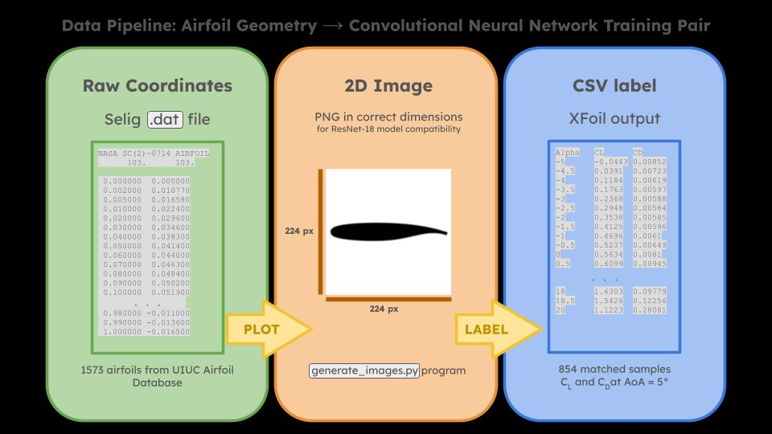
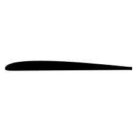
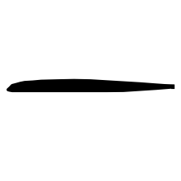

Dataset & Pipeline
From coordinates to labeled images
Every airfoil in the UIUC database starts as a plain text file of (x, y) surface coordinates. Each shape was run through XFOIL to obtain its lift coefficient at a fixed operating condition, then rendered as a 224×224 black-and-white silhouette — the format that ResNet-18 expects as input.

Airfoil Shapes
A sample of the training data
The dataset spans 854 airfoils with converged XFOIL results at 5° AoA. Each image below shows the actual training input fed to the model, alongside the XFOIL ground-truth CL it was paired with.

2032c
CL at 5°
0.842

ag11
CL at 5°
0.933

ebambino7
CL at 5°
0.721

ec863914
CL at 5°
1.047

fx66s196
CL at 5°
1.183
Note: CL values shown are approximate — exact values from CSV files should be verified before publication.